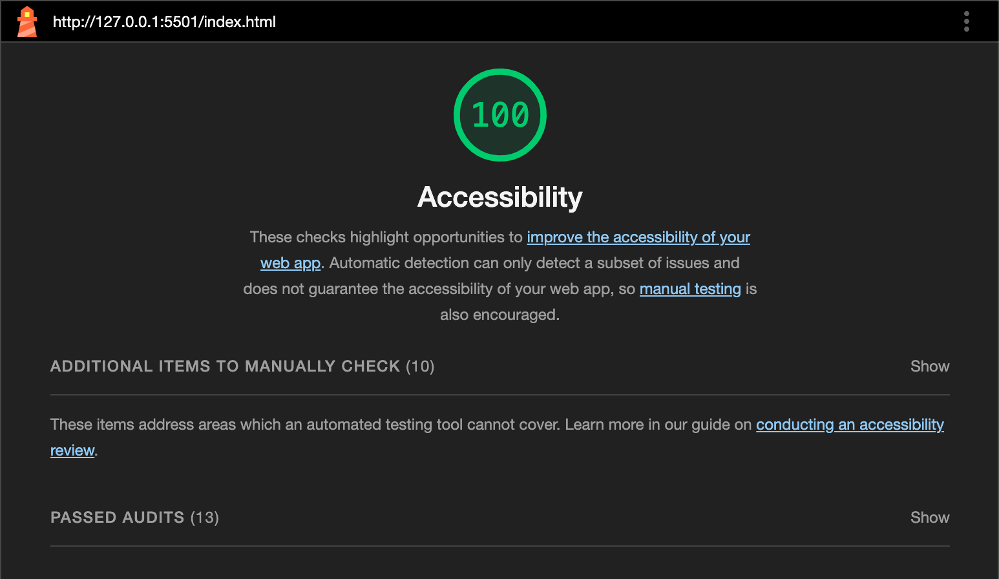
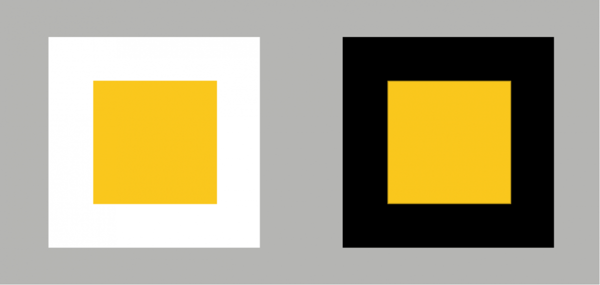
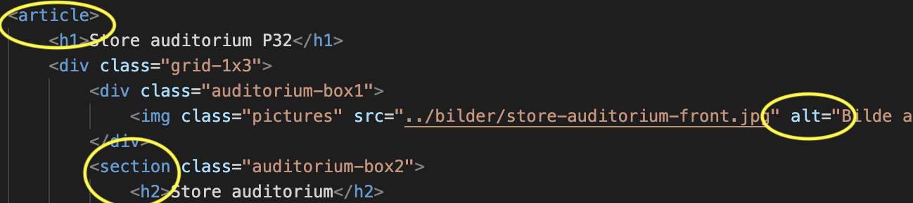
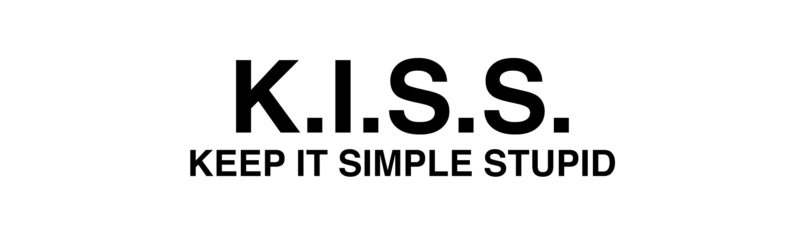

Usability and Accessibility
Our primary goal for this website was to ensure its usability for the widest possible audience. We adopted a clear and easily readable design, incorporating automated accessibility tests throughout the coding process to enhance its overall accessibility. Notable tools we utilized included webaccessibility.com, and, wave.webaim.org. The latter proved most valuable, providing insightful guidelines on both our correct and incorrect practices. The information page, particularly on universal design, engaged individuals with diverse challenges, facilitating a clearer understanding of necessary adjustments.
Color Theme Selection
Considerable deliberation was invested in selecting the color theme. Aiming for high contrast to aid those with low vision, we opted for colors from the opposite end of the spectrum. Rigorous testing was conducted for various types of color blindness, ensuring easy differentiation. The chosen color scheme also considered readability in dark environments and sensitivity to eye strain. Ultimately, the vibrant orange hue was chosen for its friendliness to vision-affected conditions, including color blindness and poor vision. Large navigation buttons were implemented for ease of use, especially catering to older individuals and those with slower cognitive functions.
Accessibility for the Blind
Ensuring accessibility for individuals with visual impairments was a top priority. We conducted thorough tests with screen readers and included descriptive text for all images and icons, (Include alternative text <alt> for images.) Use proper HTML structure (e.g., <nav>, <article>, <header>, <footer>). Use appropriate HTML elements for different content types, enhancing readability for the blind and those relying on voice-to-text features.
K.I.S.S
The design philosophy centers around simplicity and straightforwardness, minimizing the potential for errors and ensuring a foolproof website. It exudes a fresh and clean aesthetic without the distractions of fancy graphics, animations, gradients, drop shadows, textures, or frames. The color palette prioritizes readability, mitigating eye strain and accommodating color blindness. While the design may lean towards the plain side, its purpose is to be universally accessible for easy reading or listening by everyone.